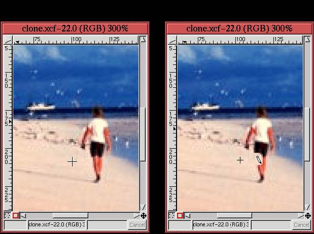

Sometimes an image has elements you'd prefer weren't there. A telephone pole and wires might ruin an otherwise lovely composition of a New England cottage on Cape Cod. Fortunately, these sorts of annoyances can be easily removed using the Clone tool. The Clone tool is found in the GIMP toolbox, and its icon resembles a rubber stamp. The following illustrates how this powerful tool is used.
Figure 6.29(a)
The idea for working with the Clone tool is to cover over the offending part of the image using colors from the background. Where do the background colors come from? From the background itself. The Clone tool covers up one part of an image using another part of the same image. When this is done carefully, it can be used to completely and convincingly remove offending elements.
Figure 6.30(a) shows a zoom of the image from
|  |
Now, when (simple) clicking and dragging on another part of the image, the neighborhood around the reference point is copied to the new mouse location. If the choice of reference point is made carefully, it can be made to look as if the foreground is being removed to reveal the natural background. The effect is shown in Figure 6.30(b), which shows part of the person's leg being removed. (Don't worry, the process is completely painless, and no one was harmed to present this example.)
The pencil icon is over the region being covered, and the size of the region being affected is equal in size to the area of the brush chosen from the Brush Selection dialog. Note that a smaller + sign cursor is visible in Figure 6.30(b). While painting with the Clone tool, the location of the reference patch is indicated by this cursor. The + sign moves in tandem with the mouse cursor, always remaining exactly the same distance away, as long as the mouse button is held down. This feature aids in producing a more natural looking result because different parts of the image are being used in the cover-up.
Figure 6.31 shows the final result of using the Clone tool for this example.